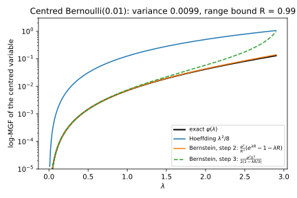
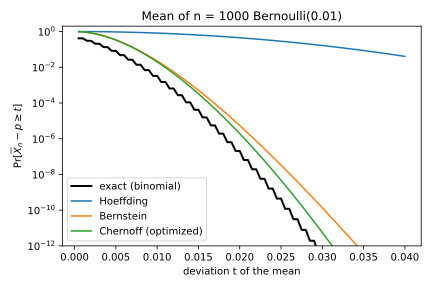
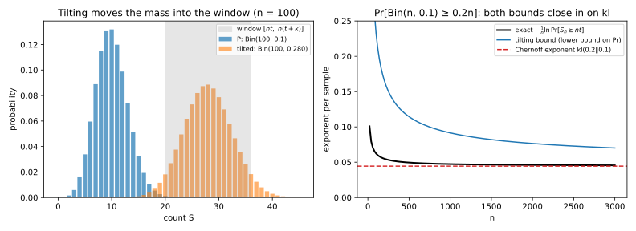
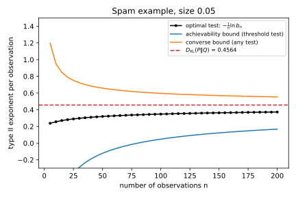
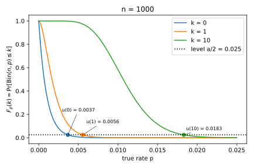
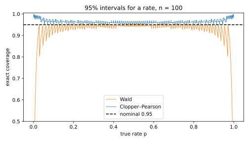
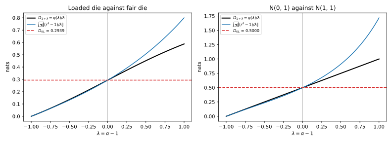
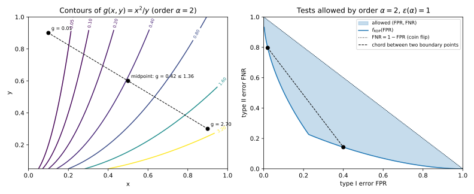
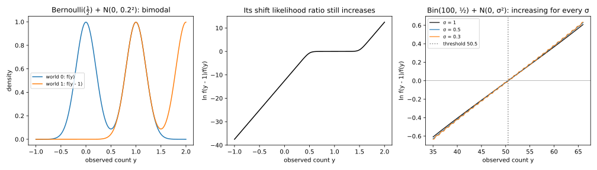

Appendix F — Tail bounds, tests and divergences
Several chapters state a fact about tails, tests or divergences and use it without a full proof. This appendix derives six of these facts step by step. They are built from the same three tools: the moment generating function (MGF) of a random variable and its logarithm, a change of measure, which rewrites a probability under one distribution as an average under another, and Jensen’s inequality for convex functions.
Table F.1 lists the six results, where a chapter states each one, and where the book relies on it.
| Result | Stated in | Relied on in |
|---|---|---|
| Bernstein’s inequality | Concentration inequalities, Hoeffding section | The same chapter’s example of a small error rate |
| Cramér’s lower bound and the Chernoff–Stein lemma | Concentration inequalities, Chernoff section; Section 4.2 | The claim that the Chernoff exponent cannot be improved |
| The Clopper–Pearson limits exist and are unique | Section 4.9 | Section 47.1 |
| Rényi divergence tends to the Kullback–Leibler divergence | Section 3.2 | Section 5.4 |
| Perspective functions are jointly convex | Section 30.3 | Section 32.7, Section 31.6, Section 33.3 |
| A noisy count has an increasing likelihood ratio | Section 9.5 | Table 9.5 |
F.1 Bernstein’s inequality: the variance sets the width
F.1.1 What the chapter uses
Take \(n\) independent variables \(X_1, \dots, X_n\), all with mean \(\mu\) and variance \(\sigma^2\), each within a distance \(R\) of its mean, so that \(|X_i - \mu| \le R\), and write \(\bar X_n\) for their average. Bernstein’s inequality, Theorem 2.6 in Concentration inequalities, says that for every deviation \(t > 0\), \[\Pr\big[\bar X_n - \mu \ge t\big] \le \exp\left(-\frac{nt^2}{2\sigma^2 + \frac23 Rt}\right). \tag{F.1}\] For a failure probability \(\beta\), the chapter’s width, a deviation that the average exceeds with probability at most \(\beta\), is then \[\sqrt{\frac{2\sigma^2\ln(1/\beta)}{n}} + \frac{2R\ln(1/\beta)}{3n}. \tag{F.2}\] The chapter cites Boucheron, Lugosi & Massart (chapter 2) for the proof, and calls the width approximate, while the derivation below shows that it is a valid width.
F.1.2 The idea
Hoeffding’s lemma bounds the MGF of a bounded variable as if it were a fair coin on the two ends of its range, which has the largest variance the range allows. Bernstein’s inequality keeps the true variance, and a rare event shows why that matters. Let \(X\) be a Bernoulli(0.01) variable, so its centred version \(Y = X - 0.01\) is \(0.99\) with probability 0.01 and \(-0.01\) otherwise. Its variance is \(0.01 \times 0.99 = 0.0099\), while Hoeffding’s lemma, which knows only that \(X\) lies in an interval of width 1, treats it as if its variance were \(\frac14\), about 25 times more. Its higher moments are just as small, as Table F.2 shows, and each stays below the bound \(\sigma^2R^{k-2}\) of step 2 below.
| Moment \(k\) | 2 | 3 | 4 |
|---|---|---|---|
| \(\mathbb E[Y^k]\) | 0.0099000 | 0.0097020 | 0.0096060 |
| Bound \(\sigma^2R^{k-2}\), with \(R = 0.99\) | 0.0099000 | 0.0098010 | 0.0097030 |
F.1.3 Derivation
The proof bounds each moment by the variance times a power of \(R\) (step 2), so that the series of the MGF is controlled by the variance (steps 3 and 4). Then the Chernoff recipe runs as usual: multiply the MGFs of the terms, choose the free parameter \(\lambda\) and simplify (steps 5 to 7).
- Centre the variables. Subtract the mean from each variable, \(Y_i = X_i - \mu\), so that each \(Y_i\) has mean 0, variance \(\sigma^2\) and \(|Y_i| \le R\). Then the event \(\bar X_n - \mu \ge t\) is the event that the sum \(S = Y_1 + \dots + Y_n\) is at least \(nt\).
- Bound each moment. For \(k \ge 2\), split \(|Y|^k\) as \(Y^2 |Y|^{k-2}\). The second factor is at most \(R^{k-2}\), because \(|Y| \le R\). Averaging gives \[\mathbb E[Y^k] \le \mathbb E\big[|Y|^k\big] \le \mathbb E[Y^2]\,R^{k-2} = \sigma^2R^{k-2}. \tag{F.3}\]
- Bound the MGF of one term. Take \(\lambda \ge 0\) and expand \(e^{\lambda Y} = 1 + \lambda Y + \sum_{k \ge 2}\lambda^kY^k/k!\). Because the variable is bounded, you may average the series term by term. The linear term then averages to 0, because \(Y\) has mean 0. Each later term is at most \(\lambda^k\sigma^2R^{k-2}/k!\) by step 2, and the direction of the inequality is kept because \(\lambda^k \ge 0\). Write \(\lambda^k\sigma^2R^{k-2}\) as \((\sigma^2/R^2)(\lambda R)^k\). Then the terms from \(k = 2\) on add up to at most \(\sigma^2/R^2\) times \(\sum_{k\ge2}(\lambda R)^k/k!\), which is the exponential series without its first two terms, \(e^{\lambda R} - 1 - \lambda R\). So \[\mathbb E\big[e^{\lambda Y}\big] \le 1 + \frac{\sigma^2}{R^2}\big(e^{\lambda R} - 1 - \lambda R\big) \le \exp\left(\frac{\sigma^2}{R^2}\big(e^{\lambda R} - 1 - \lambda R\big)\right). \tag{F.4}\] The second inequality is \(1 + x \le e^x\), which holds because the line \(1 + x\) is the tangent of the convex curve \(e^x\) at 0, and a convex curve lies above its tangents.
- Simplify the series. Write \(u = \lambda R\) and take \(0 \le u < 3\). Every factor of \(k!\) from 3 up to \(k\) is at least 3, so \(k! \ge 2\cdot 3^{k-2}\). Each term of the series is therefore at most \(\frac{u^2}{2}(u/3)^{k-2}\), and these terms form a geometric series with ratio \(u/3 < 1\). Summing it gives \[e^u - 1 - u \le \frac{u^2}{2(1 - u/3)}. \tag{F.5}\] Put back \(u = \lambda R\), multiply by \(\sigma^2/R^2\) and take the logarithm of step 3’s bound. Then the log-MGF of one term satisfies \[\ln\mathbb E\big[e^{\lambda Y}\big] \le \frac{\sigma^2\lambda^2}{2(1 - \lambda R/3)}, \qquad 0 \le \lambda < 3/R. \tag{F.6}\] This is the Gaussian log-MGF \(\sigma^2\lambda^2/2\) with the variance inflated by the factor \(1/(1 - \lambda R/3)\), which is close to 1 for small \(\lambda\).
- Chernoff for the sum. The MGF of a sum of independent terms is the product of their MGFs, so the log-MGFs add, and \(S\) has log-MGF at most \(n\) times the bound of step 4. Markov’s inequality applied to \(e^{\lambda S}\), the master bound of the Chernoff method, then gives \[\Pr[S \ge nt] \le \exp\left(-\lambda nt + \frac{n\sigma^2\lambda^2}{2(1 - \lambda R/3)}\right). \tag{F.7}\]
- Choose \(\lambda\). Take \(\lambda = t/(\sigma^2 + Rt/3)\). It is positive, and \(\lambda R/3 = (Rt/3)/(\sigma^2 + Rt/3)\) is below 1, so step 4 applies. With this choice \(1 - \lambda R/3 = \sigma^2/(\sigma^2 + Rt/3)\). So the second term of the exponent becomes \(nt^2/\big(2(\sigma^2 + Rt/3)\big)\), and the first is \(-nt^2/(\sigma^2 + Rt/3)\). Their sum is \[-\frac{nt^2}{2(\sigma^2 + Rt/3)} = -\frac{nt^2}{2\sigma^2 + \frac23Rt}, \tag{F.8}\] which is Equation F.1. This \(\lambda\) is not the exact minimizer of step 5, but it gives a clean formula.
- The width. Write \(\ell\) for \(\ln(1/\beta)\). The bound equals \(\beta\) when \(nt^2 = \ell(2\sigma^2 + \frac23Rt)\), a quadratic equation in \(t\) with the positive root \[t^* = \frac{R\ell}{3n} + \sqrt{\Big(\frac{R\ell}{3n}\Big)^2 + \frac{2\sigma^2\ell}{n}}. \tag{F.9}\] The exponent \(nt^2/(2\sigma^2 + \frac23Rt) = nt/(2\sigma^2/t + \frac23R)\) grows with \(t\), so every \(t \ge t^*\) has a bound of at most \(\beta\). The square root of a sum of two non-negative numbers is at most the sum of their square roots, as squaring both sides shows. Applied to the square root in \(t^*\), this gives \[t^* \le \sqrt{\frac{2\sigma^2\ell}{n}} + \frac{2R\ell}{3n}, \tag{F.10}\] the chapter’s width. So with probability at least \(1 - \beta\), the average exceeds \(\mu\) by less than this amount.
The proof also works when the variables have different variances \(\sigma_i^2\). Step 5 then adds the individual bounds, and \(\sigma^2\) becomes their average.
F.1.4 Checking it
The appendix’s script, apx_tails.py (see the Code section), checks steps 3 and 4 for the centred Bernoulli(0.01) on a grid of \(\lambda\) from 0.01 to 2.99, just below \(3/R = 3.03\). The exact log-MGF never exceeds the series bound of step 3, and the series bound never exceeds the simpler bound of step 4. Figure F.1 shows these three curves with Hoeffding’s \(\lambda^2/8\). For small \(\lambda\) both Bernstein curves lie on the exact one, far below Hoeffding’s, because they use the variance 0.0099 rather than \(\frac14\).

Figure F.2 shows what this buys for the mean of \(n = 1{,}000\) such variables, whose expected count is 10. At \(t = 0.01\), which asks for a count of 20 or more, the exact binomial tail is \(3.29\times10^{-3}\). Bernstein’s bound is \(2.26\times10^{-2}\), within a factor of 7 of it and close to the optimized Chernoff bound, \(2.00\times10^{-2}\), while Hoeffding’s bound is \(0.819\), which says almost nothing. The widths compare the same way. At \(\beta = 0.05\) the exact root \(t^*\) of step 7 is 0.00875 and the chapter’s simpler formula gives 0.00968, while Hoeffding’s one-sided width \(\sqrt{\ln(1/\beta)/(2n)}\) is 0.0387, four times larger.

F.2 Chernoff’s exponent is exact, for tails and for tests
F.2.1 What the chapter uses
Let \(X_1, \dots, X_n\) be independent copies of a variable \(X\) with mean \(\mu\), let \(S_n = X_1 + \dots + X_n\), and write \(K_X(\lambda) = \ln\mathbb E[e^{\lambda X}]\) for the log-MGF of one copy. The Chernoff method of Concentration inequalities bounds the chance that the sum reaches \(nt\), for a level \(t\) above the mean, by \[\Pr[S_n \ge nt] \le e^{-nK_X^*(t)}, \qquad K_X^*(t) = \sup_{\lambda > 0}\big(\lambda t - K_X(\lambda)\big). \tag{F.11}\] The chapter quotes Cramér’s theorem, that no method can improve this exponent for large sums. In symbols, for every \(t\) between the mean \(\mu\) and the largest value \(x_{\max}\) that \(X\) can take, \[\lim_{n\to\infty}-\frac1n\ln\Pr[S_n \ge nt] = K_X^*(t). \tag{F.12}\]
Section 4.2 makes the same claim about tests, citing Cover & Thomas (chapter 11). You observe \(n\) independent draws and test \(H_0\), that they come from \(P\), against \(H_1\), that they come from \(Q\). Hold the type I error at a level \(\mathrm{FPR}\) in \((0, 1)\), and write \(\mathrm{FNR}_n^*(\mathrm{FPR})\) for the smallest type II error of any test, randomized or not, whose type I error is at most \(\mathrm{FPR}\). (This page writes \(\mathrm{FPR}\) and \(\mathrm{FNR}\) for the type I and type II errors because it needs \(\alpha\) for a Rényi order and \(\beta\) for a failure probability.) The Chernoff–Stein lemma says that \[\lim_{n\to\infty}-\frac1n\ln \mathrm{FNR}_n^*(\mathrm{FPR}) = D_{\mathrm{KL}}(P\|Q), \qquad D_{\mathrm{KL}}(P\|Q) = \mathbb E_P\Big[\ln\frac{p(X)}{q(X)}\Big], \tag{F.13}\] where \(D_{\mathrm{KL}}\) is the Kullback–Leibler (KL) divergence.
F.2.2 The idea
Chernoff’s bound shows that the probability is at most about \(e^{-nK_X^*(t)}\). To show that it is also at least about that, change the distribution so that the rare event becomes typical, and then pay for the change. The change is the tilted distribution of Divergences, which multiplies the probability of each outcome \(x\) by \(e^{\lambda x}\) and renormalizes, so that a positive \(\lambda\) moves mass toward large values.
Here is a concrete case. A coin lands heads with probability 0.1, and you ask how likely 100 tosses are to give at least 20 heads, twice the expected number. Tilting by \(e^{\lambda x}\), with \(x = 1\) for heads and 0 for tails, turns it into a coin with heads probability \(0.1e^\lambda/(0.9 + 0.1e^\lambda)\). With \(\lambda = \ln 2.25 = 0.8109\) that probability is exactly 0.2, so for the tilted coin 20 heads in 100 is the typical outcome. The price of switching back is the ratio of the two distributions on those samples, which is about \(e^{-n(\lambda t - K_X(\lambda))}\), the Chernoff exponent.
The Chernoff–Stein lemma uses the same trick, with the two distributions already given. Under \(P\), the evidence \(\sum_i\ln(p(x_i)/q(x_i))\) of a sample is close to \(n\,D_{\mathrm{KL}}(P\|Q)\), by the law of large numbers. So on most samples that \(P\) produces, \(Q\) gives a probability about \(e^{-nD_{\mathrm{KL}}(P\|Q)}\) times smaller. A test with a small type I error must accept \(H_0\) on most of these samples, so under \(Q\) it accepts with probability at least about \(e^{-nD_{\mathrm{KL}}(P\|Q)}\), and the test that accepts exactly the samples with large evidence does that well.
F.2.3 Derivation
Two facts from the chapters do the work. The first is the change of measure (Lemma 3.2, Lemma 4.2). If \(P\) and \(Q'\) give positive probability to the same outcomes, then multiplying and dividing by \(q'(x)\) gives, for any event \(A\), \[\Pr_P[X \in A] = \sum_{x \in A}p(x) = \sum_{x\in A}q'(x)\frac{p(x)}{q'(x)} = \mathbb E_{Q'}\Big[\frac{p(X)}{q'(X)}\mathbf 1[X \in A]\Big]. \tag{F.14}\] The second is the tilted distribution with parameter \(\lambda\), whose probabilities are \[q_\lambda(x) = p(x)\,e^{\lambda x - K_X(\lambda)}. \tag{F.15}\] They add up to 1 because \(e^{K_X(\lambda)} = \sum_xp(x)e^{\lambda x}\). Its mean is \(K_X'(\lambda)\) and its variance is \(K_X''(\lambda)\), as the Rényi section of Divergences shows for the log-likelihood ratio. Here you need these facts only for a bounded \(X\), where the sums are finite and the derivatives can be taken term by term.
Cramér’s lower bound. Assume that \(X\) is bounded and not constant, and that \(\mu < t < x_{\max}\). The plan is to tilt so that the tilted mean sits just above \(t\), show that the tilted sums then land in a narrow window above \(nt\), and pay the ratio of the two distributions on that window.
- Tilt to just above \(t\). Fix a small \(\kappa > 0\) with \(t + \kappa < x_{\max}\). The tilted mean \(K_X'(\lambda)\) equals \(\mu\) at \(\lambda = 0\). It increases with \(\lambda\), because its derivative is a variance, which is positive for a variable that is not constant. It tends to \(x_{\max}\) as \(\lambda \to \infty\), because the weight \(e^{\lambda x}\) favours the largest values more and more. So there is one \(\lambda > 0\) with \(K_X'(\lambda) = t + \kappa/2\).
- Change the measure of the whole sample. Tilt each of the \(n\) copies. The ratio of the two probabilities of a sample is the product of the ratios of its draws, \(\prod_ip(x_i)/q_\lambda(x_i) = e^{-\lambda S_n + nK_X(\lambda)}\). So the change of measure gives, for any event \(A\) about the sample, \[\Pr[A] = \mathbb E_{Q_\lambda}\big[e^{-\lambda S_n + nK_X(\lambda)}\,\mathbf 1[A]\big]. \tag{F.16}\]
- Restrict to a window. Let \(A\) be the event \(nt \le S_n \le n(t + \kappa)\), which is part of the event \(S_n \ge nt\). On \(A\), the sum is at most \(n(t + \kappa)\), and \(\lambda > 0\), so \(e^{-\lambda S_n} \ge e^{-\lambda n(t + \kappa)}\). Hence \[\Pr[S_n \ge nt] \ge \Pr[A] \ge e^{-n(\lambda(t + \kappa) - K_X(\lambda))}\,\Pr_{Q_\lambda}[A]. \tag{F.17}\]
- The window is likely under the tilt. Under \(Q_\lambda\), the average \(S_n/n\) has mean \(t + \kappa/2\) and variance \(K_X''(\lambda)/n\), and the window contains every average within \(\kappa/2\) of that mean. Chebyshev’s inequality bounds the chance of falling outside, so \[\Pr_{Q_\lambda}[A] \ge 1 - \frac{4K_X''(\lambda)}{n\kappa^2}, \tag{F.18}\] which tends to 1 as \(n\) grows.
- Let \(n\) grow. Take logarithms in step 3 and divide by \(-n\). The term \(-\frac1n\ln \Pr_{Q_\lambda}[A]\) tends to 0, so \[\limsup_{n\to\infty}-\frac1n\ln\Pr[S_n \ge nt] \le \lambda(t + \kappa) - K_X(\lambda). \tag{F.19}\]
- Let \(\kappa\) shrink. As \(\kappa \to 0\), the chosen \(\lambda\) tends to the \(\lambda_0\) with \(K_X'(\lambda_0) = t\), because \(K_X'\) is continuous and increasing. So the right side of step 5 tends to \(\lambda_0t - K_X(\lambda_0)\). The function \(\lambda t - K_X(\lambda)\) is concave, since \(K_X\) is convex, and its slope \(t - K_X'(\lambda)\) is zero at \(\lambda_0\). So it is largest at \(\lambda_0\), and \(\lambda_0t - K_X(\lambda_0) = K_X^*(t)\).
- Combine with Chernoff. Chernoff’s bound gives \(-\frac1n\ln\Pr[S_n \ge nt] \ge K_X^*(t)\) for every \(n\). Step 6 gives the matching upper limit, which proves Equation F.12.
For the coin, \(K_X(\lambda) = \ln(1 - p + pe^\lambda)\) with \(p = 0.1\), and solving \(K_X'(\lambda_0) = t\) gives \(e^{\lambda_0} = t(1 - p)/\big(p(1 - t)\big)\). Substituting, the exponent is the binary KL divergence \[K_X^*(t) = \mathrm{kl}(t\|p) = t\ln\frac tp + (1 - t)\ln\frac{1 - t}{1 - p}. \tag{F.20}\] With \(t = 0.2\), \(\lambda_0 = \ln 2.25 = 0.8109\) and \(K_X(\lambda_0) = \ln1.125 = 0.11778\), so \(K_X^*(0.2) = 0.2 \times 0.8109 - 0.11778 = 0.04440\).
Chernoff–Stein, achievability. Assume that \(P\) and \(Q\) give positive probability to the same outcomes. Write \(L(x)\) for the evidence \(\ln(p(x)/q(x))\) of one draw \(x\). Under \(P\) its mean is the divergence \(D_{\mathrm{KL}}(P\|Q)\), written \(D_{\mathrm{KL}}\) below, and assume that its variance \(V\) is finite. For a whole sample \(x = (x_1, \dots, x_n)\), write \(p^n(x)\) and \(q^n(x)\) for its probabilities under the two hypotheses. Each is a product over the draws, so the change of measure becomes \[q^n(x) = p^n(x)\,e^{-\sum_iL(x_i)}. \tag{F.21}\]
- The test. Fix \(\kappa > 0\), and accept \(H_0\) exactly when the average evidence is at least \(D_{\mathrm{KL}} - \kappa\). Call that set of samples \(A_n\).
- Its type I error. The test rejects when the average evidence falls more than \(\kappa\) below its mean \(D_{\mathrm{KL}}\). The average has variance \(V/n\), so Chebyshev’s inequality gives a type I error of at most \(V/(n\kappa^2)\), which is below \(\mathrm{FPR}\) once \(n\) is large.
- Its type II error. On \(A_n\) the total evidence is at least \(n(D_{\mathrm{KL}} - \kappa)\), so \(q^n(x) \le p^n(x)\,e^{-n(D_{\mathrm{KL}} - \kappa)}\). Summing over \(A_n\) gives \[\mathrm{FNR}_n = \Pr_{Q^n}[A_n] \le e^{-n(D_{\mathrm{KL}} - \kappa)}\Pr_{P^n}[A_n] \le e^{-n(D_{\mathrm{KL}} - \kappa)}. \tag{F.22}\]
- The best test does at least as well. So \(\mathrm{FNR}_n^*(\mathrm{FPR}) \le e^{-n(D_{\mathrm{KL}} - \kappa)}\) for large \(n\), and \(\liminf_n -\frac1n\ln \mathrm{FNR}_n^*(\mathrm{FPR}) \ge D_{\mathrm{KL}} - \kappa\) for every \(\kappa > 0\).
Chernoff–Stein, converse. Now take any test, described by its probability \(\phi(x)\) of rejecting \(H_0\), with type I error \(\mathbb E_{P^n}[\phi] \le \mathrm{FPR}\).
- Restrict to typical samples. Let \(B_n\) be the set of samples whose average evidence is at most \(D_{\mathrm{KL}} + \kappa\). On \(B_n\), \(q^n(x) \ge p^n(x)\,e^{-n(D_{\mathrm{KL}} + \kappa)}\). The type II error is the probability of accepting under \(Q\), and keeping only the samples in \(B_n\) can only lower it, so \[\mathrm{FNR}_n = \sum_x\big(1 - \phi(x)\big)q^n(x) \ge e^{-n(D_{\mathrm{KL}} + \kappa)}\sum_{x\in B_n}\big(1 - \phi(x)\big)p^n(x). \tag{F.23}\]
- The test must accept most typical samples. The last sum is the acceptance probability under \(P\), at least \(1 - \mathrm{FPR}\), minus the part outside \(B_n\). That part is at most \(\Pr_{P^n}[B_n^c]\), which Chebyshev’s inequality bounds by \(V/(n\kappa^2)\). So the sum is at least \(1 - \mathrm{FPR} - V/(n\kappa^2)\).
- Let \(n\) grow. For large \(n\) that factor is positive, so taking logarithms gives \(-\frac1n\ln \mathrm{FNR}_n \le D_{\mathrm{KL}} + \kappa - \frac1n\ln\big(1 - \mathrm{FPR} - V/(n\kappa^2)\big)\), and the last term tends to 0. This holds for every test of level \(\mathrm{FPR}\), so \(\limsup_n-\frac1n\ln \mathrm{FNR}_n^*(\mathrm{FPR}) \le D_{\mathrm{KL}} + \kappa\). Since \(\kappa\) is arbitrary, steps 4 and 7 together prove Equation F.13.
F.2.4 Checking it
For the coin with \(p = 0.1\) and \(t = 0.2\), the script computes the exact exponent \(-\frac1n\ln\Pr[S_n \ge 0.2n]\) from the binomial distribution. It is 0.06225 at \(n = 100\), 0.04728 at \(n = 1{,}000\) and 0.04481 at \(n = 10{,}000\), so it approaches \(\mathrm{kl}(0.2\|0.1) = 0.04440\) from above, as Chernoff’s bound requires. The right panel of Figure F.3 also draws the bound of steps 3 and 4 for each \(n\), with the window width \(\kappa = 4\sqrt{t(1 - t)/n}\). It closes in from the other side, but slowly, because the window must shrink like \(1/\sqrt n\), the size of the typical fluctuation. The left panel shows the tilt at \(n = 100\): the original count sits around 10, while the tilted count sits inside the window from 20 up.

For the Chernoff–Stein lemma the script uses the spam example of Table 4.1. An email’s count of suspicious words, capped at 3, takes the values 0, 1, 2, 3 with probabilities 0.4, 0.3, 0.2, 0.1 under ham (\(P\)) and 0.1, 0.2, 0.3, 0.4 under spam (\(Q\)). There \(D_{\mathrm{KL}}(P\|Q) = 0.4564\) and the variance of the evidence is \(V = 0.8348\). The script tracks the exact distribution of the evidence under both hypotheses and builds the most powerful test of size exactly 0.05, as the Neyman–Pearson lemma prescribes. Table F.3 gives its type II error and the two bounds of the derivation. They use \(\kappa = \sqrt{V/(0.05\,n)}\) for achievability, so that step 2 gives size 0.05, and \(\kappa = \sqrt{2V/(0.95\,n)}\) for the converse, so that the factor in step 6 is \(0.95/2\). A negative lower bound says nothing, because an exponent is never negative.
| \(n\) | \(\mathrm{FNR}_n^*(0.05)\) | \(-\frac1n\ln \mathrm{FNR}_n^*\) | Bounds from the proof |
|---|---|---|---|
| 10 | \(7.702\times10^{-2}\) | 0.2564 | \([-0.8357, 0.9501]\) |
| 50 | \(1.160\times10^{-7}\) | 0.3194 | \([-0.1214, 0.6588]\) |
| 200 | \(3.959\times10^{-33}\) | 0.3730 | \([0.1675, 0.5539]\) |
Figure F.4 shows the exponent creeping up toward 0.4564, with both bounds closing in at the slow rate \(1/\sqrt n\). With 200 observations the exact exponent is still 18% below KL, because the test must leave room for fluctuations of the evidence of order \(\sqrt n\).

F.2.5 What it does not cover
Cramér’s theorem holds without boundedness. The upper bound is always Chernoff’s, and the lower bound needs only a tilt with the right mean, which exists in more general settings. Dembo & Zeitouni prove it in full. The Chernoff–Stein argument above uses a finite variance \(V\) only for Chebyshev’s inequality, and the weak law of large numbers gives the same two limits with only a finite KL divergence, which is the version Cover & Thomas prove. Neither proof says how fast the limit is reached, and the examples above show an error of order \(1/\sqrt n\) in the exponent.
F.3 The Clopper–Pearson limits exist and are unique
F.3.1 What the chapter uses
Write \(F_p(k) = \Pr[\mathrm{Bin}(n, p) \le k]\) for the probability of at most \(k\) successes in \(n\) independent trials that each succeed with probability \(p\). For \(0 \le k \le n - 1\), the function \(p \mapsto F_p(k)\) is continuous and strictly decreasing on \([0, 1]\), from \(F_0(k) = 1\) to \(F_1(k) = 0\). So for every level \(c\) in \((0, 1)\) exactly one rate \(u(k)\) in \((0, 1)\) solves \(F_{u(k)}(k) = c\). Moreover, \[F_p(k) = \int_p^1 n\binom{n-1}{k}s^k(1 - s)^{n-1-k}\,ds. \tag{F.24}\] For \(k = n\), \(F_p(n) = 1\) for every \(p\), and the chapter sets \(u(n) = 1\). Step 1 of the Clopper–Pearson derivation in Section 4.9 uses this with \(c\) equal to half of one minus the confidence level, and Theorem 47.1 in Auditing uses it for its one-sided bounds.
F.3.2 The idea
Picture all the trials driven by one set of random numbers. Draw \(n\) numbers \(U_1, \dots, U_n\) uniformly from \([0, 1]\), and say that trial \(i\) succeeds at rate \(p\) when \(U_i \le p\). Each trial then succeeds with probability \(p\), independently, so the count \(K_p\) of successes is \(\mathrm{Bin}(n, p)\). Now raise \(p\) while keeping the same numbers. A trial that succeeded still succeeds, and some new ones may join, so the count never goes down. For example, with \(n = 3\) and \(U = (0.15, 0.62, 0.40)\), Table F.4 shows the count as \(p\) grows.
| Rate \(p\) | 0.1 | 0.3 | 0.5 | 0.7 |
|---|---|---|---|---|
| Trials with \(U_i \le p\) | none | 1 | 1, 3 | 1, 2, 3 |
| Count \(K_p\) | 0 | 1 | 2 | 3 |
So on every draw the event “at most \(k\) successes” can only stop happening as \(p\) grows, and its probability \(F_p(k)\) never increases. The count leaves that event when one more trial crosses over while exactly \(k\) of the other \(n - 1\) have already succeeded. That has positive probability for every \(p\) strictly between 0 and 1, so the decrease is strict.
F.3.3 Derivation
- The endpoints. At \(p = 0\) no trial succeeds, so \(F_0(k) = 1\). At \(p = 1\) all \(n\) succeed, so \(F_1(k) = 0\) for \(k \le n - 1\).
- Continuity. \(F_p(k) = \sum_{j=0}^k\binom njp^j(1 - p)^{n-j}\) is a polynomial in \(p\), so it is continuous and can be differentiated.
- The derivative telescopes. Write \(g_j(p)\) for the probability of exactly \(j\) successes in \(n - 1\) trials, \(\binom{n-1}{j}p^j(1 - p)^{n-1-j}\), and set \(g_{-1} = 0\). Differentiate one term of the sum by the product rule, and then use the identities \(j\binom nj = n\binom{n-1}{j-1}\) and \((n - j)\binom nj = n\binom{n-1}{j}\). The result is \[\frac{d}{dp}\binom njp^j(1 - p)^{n-j} = n\big(g_{j-1}(p) - g_j(p)\big). \tag{F.25}\] In the sum over \(j = 0, \dots, k\), each \(g_j\) appears once with a plus sign and once with a minus sign, except \(g_{-1} = 0\) and the last one. So \[\frac{d}{dp}F_p(k) = -n\binom{n-1}{k}p^k(1 - p)^{n-1-k}. \tag{F.26}\] For example, with two trials and \(k = 0\), \(F_p(0) = (1 - p)^2\) has derivative \(-2(1 - p)\), which is what the formula gives. In words, the formula is the coupling of the idea: when \(p\) rises a little, one of the \(n\) trials may cross over, and the count leaves “at most \(k\)” exactly when the other \(n - 1\) trials hold exactly \(k\) successes.
- Strictly decreasing. The derivative is negative for \(0 < p < 1\). By the mean value theorem, for \(p < p'\) the difference \(F_{p'}(k) - F_p(k)\) equals \((p' - p)\) times the derivative at some point in between, which is negative.
- Existence and uniqueness. A continuous function that goes from 1 to 0 takes every value \(c\) in between, by the intermediate value theorem. A strictly decreasing function takes each value at most once. So exactly one \(u(k)\) has \(F_{u(k)}(k) = c\). Strictness is also what the chapter needs to turn the limit into a statement about the true rate: the true rate \(p\) is at least \(u(K)\) exactly when \(F_p(K) \le F_{u(K)}(K)\).
- The lower end. For \(k \ge 1\), the probability of at least \(k\) successes is \(1 - F_p(k - 1)\). By steps 1 to 4 it is continuous and strictly increasing in \(p\), from 0 to 1. So the chapter’s lower limit \(l(k)\), the rate at which at least \(k\) successes have probability \(c\), also exists and is unique.
- The Beta form. Integrate the derivative of step 3 from \(p\) to 1, and use \(F_1(k) = 0\). This gives Equation F.24. The integrand is the density of the \(\mathrm{Beta}(k + 1, n - k)\) distribution, because its normalizing constant \(1/B(k + 1, n - k) = n!/\big(k!\,(n - 1 - k)!\big)\) equals \(n\binom{n-1}{k}\). So \(F_p(k)\) is the probability that a \(\mathrm{Beta}(k + 1, n - k)\) variable exceeds \(p\), and \(u(k)\) is the point that such a variable exceeds with probability \(c\). This is how statistical software computes Clopper–Pearson limits.
F.3.4 Checking it
Figure F.5 draws \(F_p(k)\) against \(p\) for \(n = 1{,}000\) and \(k = 0\), 1 and 10. Each curve falls from 1 to 0 and crosses the level \(0.025\) exactly once, at the upper limit: \(u(0) = 0.003682\), \(u(1) = 0.005559\) and \(u(10) = 0.018313\). The first has a closed form, because \(F_p(0) = (1 - p)^n\) gives \(u(0) = 1 - 0.025^{1/1000}\). The script checks the derivative of step 3 against finite differences and the integral of step 7 by numerical integration. It also recomputes by bisection the limits that the chapters quote. For 10 successes in 10,000 trials the interval is \([0.00048, 0.00184]\). For 1 success in 1,000 the one-sided 95% bound is 0.0047, and for none in 3,000 it is \(9.9808\times10^{-4}\).

Figure F.6 shows the exact coverage of the 95% Clopper–Pearson interval from \(n = 100\) trials at each true rate \(p\), that is, the probability that the interval built from a \(\mathrm{Bin}(100, p)\) count contains \(p\). The curve is a sawtooth, because it jumps each time \(p\) crosses an endpoint of one of the 101 intervals, but it never drops below 0.95. The Wald interval \(\hat p \pm 1.96\sqrt{\hat p(1 - \hat p)/n}\) of Section 4.9 falls far below 0.95 near the edges: at \(p = 0.01\) it covers only 63.34% of the time, against 98.16% for Clopper–Pearson.

F.4 Rényi divergence tends to KL at order 1
F.4.1 What the chapter uses
Section 3.2 writes the Rényi divergence of order \(\alpha\) through the likelihood ratio \(r = p/q\) and the log-MGF \(K_L\) of the evidence \(L = \ln r\) under \(P\) (Equation 3.13): \[K_L(\lambda) = \ln\mathbb E_P\big[r^\lambda\big], \qquad D_\alpha(P\|Q) = \frac{K_L(\alpha - 1)}{\alpha - 1}. \tag{F.27}\] Property 1 of Theorem 3.2 says that \(D_\alpha \to D_{\mathrm{KL}}(P\|Q) = \mathbb E_P[\ln r]\) as \(\alpha \to 1\) when \(D_\alpha\) is finite for some \(\alpha > 1\), which makes \(K_L\) finite near 0. This section proves the limit from below with no assumption, \[\lim_{\alpha \uparrow 1}D_\alpha(P\|Q) = D_{\mathrm{KL}}(P\|Q), \tag{F.28}\] even when the KL divergence is infinite. It also proves the facts Section 5.4 states for the Rényi entropy \(H_\alpha(X) = \frac{1}{1 - \alpha}\log_2\sum_xp(x)^\alpha\), in bits, of a variable with finitely many values: \(H_\alpha\) tends to the Shannon entropy \(H\) as \(\alpha \to 1\), and to the min-entropy \(H_\infty\) as \(\alpha \to \infty\).
F.4.2 The idea
Write \(\lambda = \alpha - 1\), so that \(D_{1+\lambda} = K_L(\lambda)/\lambda\). Two simple inequalities trap \(K_L(\lambda)\). The first is Jensen’s inequality for the concave logarithm, which says that the log of an average is at least the average of the log. The second is the tangent-line bound \(\ln m \le m - 1\). Applied to the average \(\mathbb E_P[r^\lambda]\), they give \[\lambda D_{\mathrm{KL}} = \mathbb E_P[\ln r^\lambda] \le K_L(\lambda) \le \mathbb E_P[r^\lambda] - 1. \tag{F.29}\] Dividing by \(\lambda\), with care for its sign, puts \(D_{1+\lambda}\) between \(D_{\mathrm{KL}}\) and the average of the power slope \[h_\lambda(r) = \frac{r^\lambda - 1}{\lambda}. \tag{F.30}\] For each fixed value of \(r\), the power slope moves steadily toward \(\ln r\) as \(\lambda\) tends to 0, so its average moves toward the KL divergence, and no derivative of \(K_L\) is needed. On the die of Table 3.1, \(r\) is 3 on a six and 0.6 otherwise. Table F.5 shows \(h_\lambda\) at both values: each row increases from left to right, and the middle column, \(\lambda = 0\), is \(\ln r\).
| \(\lambda\) | \(-0.5\) | \(-0.1\) | \(0\) | \(0.1\) | \(0.5\) |
|---|---|---|---|---|---|
| \(h_\lambda(3)\) | 0.8453 | 1.0404 | 1.0986 | 1.1612 | 1.4641 |
| \(h_\lambda(0.6)\) | \(-0.5820\) | \(-0.5241\) | \(-0.5108\) | \(-0.4980\) | \(-0.4508\) |
F.4.3 Derivation
The derivation uses one theorem about averages, the monotone convergence theorem. Suppose random variables \(Z_1 \le Z_2 \le \dots\) increase to a limit \(Z\) at every outcome, and \(\mathbb E[Z_1] > -\infty\). Then \(\mathbb E[Z_k] \to \mathbb E[Z]\), and the limit may be \(+\infty\). For finitely many outcomes this is just the limit of a finite sum, and for densities it is a standard theorem of integration.
- The power slopes. For a number \(x > 0\), write \(z = \ln x\), so that \(x^\lambda = e^{\lambda z}\). Then the power slope is an integral, \[h_\lambda(x) = \frac{e^{\lambda z} - 1}{\lambda} = \int_0^z e^{\lambda s}\,ds, \tag{F.31}\] which runs backward when \(z < 0\). At \(\lambda = 0\) the integral is \(z = \ln x\), and it changes continuously with \(\lambda\). It is also non-decreasing in \(\lambda\). If \(z > 0\), every \(s\) in the integral is positive, so \(e^{\lambda s}\) grows with \(\lambda\). If \(z < 0\), the integral is \(-\int_z^0e^{\lambda s}\,ds\) with negative \(s\), so \(e^{\lambda s}\) shrinks with \(\lambda\) and its negative grows. So as \(\lambda \uparrow 0\), \(h_\lambda(x)\) increases to \(\ln x\).
- Below order 1, an upper bound. Take \(\lambda \in (-1, 0)\). Then \(r^\lambda = (q/p)^{|\lambda|}\), and Jensen’s inequality for the concave power \(|\lambda| < 1\) gives \(\mathbb E_P[r^\lambda] \le \big(\mathbb E_P[q/p]\big)^{|\lambda|} \le 1\), so \(K_L(\lambda)\) is not \(+\infty\). (If \(P\) and \(Q\) share no outcome, \(K_L(\lambda) = -\infty\) and every divergence is infinite, so there is nothing to prove.) Next, the logarithm is concave, so Jensen’s inequality gives \[K_L(\lambda) = \ln\mathbb E_P[r^\lambda] \ge \mathbb E_P[\ln r^\lambda] = \lambda D_{\mathrm{KL}}. \tag{F.32}\] Dividing by the negative \(\lambda\) flips the inequality, so \(D_{1+\lambda}\) is at most \(D_{\mathrm{KL}}\). When the KL divergence is infinite this says nothing, and nothing is needed.
- Below order 1, a lower bound. Since \(\ln m \le m - 1\), \(K_L(\lambda) \le \mathbb E_P[r^\lambda] - 1 = \lambda\,\mathbb E_P[h_\lambda(r)]\). Dividing by the negative \(\lambda\) flips it again: \[\mathbb E_P[h_\lambda(r)] \le D_{1+\lambda} \le D_{\mathrm{KL}}, \qquad -1 < \lambda < 0. \tag{F.33}\]
- The limit from below. As \(\lambda \uparrow 0\), \(h_\lambda(r)\) increases to \(\ln r\) by step 1. The sequence starts above an integrable variable: at \(\lambda = -1\), \(h_{-1}(r) = 1 - 1/r\), and \(\mathbb E_P[1/r] = \sum_{x:\,p(x)>0}q(x) \le 1\), so \(\mathbb E_P[h_{-1}(r)] \ge 0\). So monotone convergence applies, and the average of the power slope tends to the average of \(\ln r\), which is the KL divergence. Both sides of step 3 tend to \(D_{\mathrm{KL}}\), so \(D_\alpha \to D_{\mathrm{KL}}\) as \(\alpha \uparrow 1\). This includes an infinite KL divergence, where the lower bound alone grows without limit.
- Rényi entropy. Let \(U\) be the uniform distribution on the \(N\) values of \(X\), which gives each value probability \(1/N\). With the divergence also in bits, \(\log_2\) in place of \(\ln\), the definition gives \[D_\alpha(P\|U) = \frac{1}{\alpha - 1}\log_2\sum_xp(x)^\alpha N^{\alpha - 1} = \log_2 N - H_\alpha(X). \tag{F.34}\] In the same way, the KL divergence from the uniform distribution is \(\log_2 N\) minus the Shannon entropy \(H(X)\). On a finite set the likelihood ratio \(Np(x)\) is at most \(N\), so every \(D_\alpha(P\|U)\) is finite. So step 4 gives the limit from below, property 1 of Theorem 3.2 gives the limit from above, and \(H_\alpha \to H\) as \(\alpha \to 1\). As \(\alpha \to \infty\), property 2 of Theorem 3.2 says that \(D_\alpha(P\|U)\) tends to the logarithm of the largest ratio, \(\log_2(N\max_xp(x))\). Subtracting it from \(\log_2 N\) leaves the min-entropy, \[\lim_{\alpha\to\infty}H_\alpha(X) = -\log_2\max_xp(x) = H_\infty(X). \tag{F.35}\]
F.4.4 Checking it
Figure F.7 draws the sandwich for the die and for the pair \(\mathcal N(0, 1)\) against \(\mathcal N(1, 1)\), whose KL divergence is \(\frac12\). The bound \(\mathbb E_P[h_\lambda(r)]\) (blue) lies below the divergence (black) left of 0 and above it right of 0, where the same two inequalities hold with their direction kept, and both meet the KL line at \(\lambda = 0\). On the die, where \(D_{\mathrm{KL}} = 0.2939\), the divergence at \(\lambda = -0.01\) is 0.2907 with the lower bound 0.2902.

For the PIN example of Section 5.4, with 10% on one PIN and the rest uniform over the other 9,999, the Shannon entropy is \(H = 12.4278\) bits. The script finds \(H_{0.999} = 12.4310\) and \(H_{1.001} = 12.4246\) on either side of it. As the order grows, \(H_2 = 6.6322\) and \(H_{100} = 3.3555\) approach the min-entropy \(H_\infty = 3.3219\).
F.4.5 What it does not cover
Without the assumption of Theorem 3.2, the limit from above can fail. Take outcomes \(k = 1, 2, \dots\) with \(p(k)\) proportional to \(e^{-\sqrt k}\), and let \(q(k) = p(k)e^{-k}\), with the rest of \(Q\)’s mass on an extra outcome that \(P\) never produces. Then \(\ln r(k) = k\), so \(D_{\mathrm{KL}} = \mathbb E_P[k]\) is finite. But \(\mathbb E_P[r^\lambda]\) sums \(e^{\lambda k - \sqrt k}\) times a constant, which diverges for every \(\lambda > 0\). So \(D_\alpha = \infty\) for every \(\alpha > 1\), while the limit from below is the finite KL divergence. van Erven & Harremoës (2014) treat the general case, including orders near 0 and \(\infty\).
F.5 Perspective functions are jointly convex
F.5.1 What the chapter uses
Let \(g\) be a convex function on \((0, \infty)\). Its perspective is the function of two positive numbers that applies \(g\) to their ratio and multiplies the result by the denominator, \(G(x, y) = y\,g(x/y)\). It is jointly convex: for points \((x_t, y_t)\), indexed by \(t\), and weights \(w_t \ge 0\) that add up to 1, \[G\Big(\sum_tw_tx_t,\ \sum_tw_ty_t\Big) \le \sum_tw_t\,G(x_t, y_t). \tag{F.36}\] It is also positively homogeneous, which means that scaling both arguments by \(c > 0\) scales the value by \(c\), and so it is subadditive: \(G(x_1 + x_2, y_1 + y_2) \le G(x_1, y_1) + G(x_2, y_2)\). The Rényi divergence uses \(g(t) = t^\alpha\) with \(\alpha > 1\), whose perspective is \(G(x, y) = x^\alpha y^{1-\alpha}\), through the sum \[F(P, Q) = \sum_yP(y)^\alpha Q(y)^{1-\alpha} = e^{(\alpha - 1)D_\alpha(P\|Q)}. \tag{F.37}\] Four chapter steps rest on these properties, which this section proves:
- Step 3 of the proof of Theorem 30.2, on converting Rényi differential privacy (RDP) guarantees, uses that a test cannot increase the Rényi divergence.
- The paragraph after the proof of Theorem 30.2, and step 3 of Section 32.7, use that each constraint of Equation 30.14 is convex in the test’s errors \((\mathrm{FPR}, \mathrm{FNR})\), so that its lower boundary \(f_{\mathrm{RDP}}\) is convex, and that each constraint is smallest, equal to 1, at \(\mathrm{FNR} = 1 - \mathrm{FPR}\).
- Step 2 of the proof of Proposition 31.4 uses the joint convexity of \(F\) for the pair \((Q, P)\) written as a mixture.
- Step 2 of Section 33.3 uses that a mixture of pairs with shared weights has a Rényi divergence no larger than the largest of its parts, which is called quasi-convexity (van Erven & Harremoës 2014, Theorem 13).
F.5.2 The idea
When you mix two points, the ratio of the mixture is an average of the two ratios, weighted by the denominators. Take \(\alpha = 2\), so \(G(x, y) = x^2/y\), and the two points \((0.9, 0.3)\) and \((0.1, 0.9)\), whose ratios \(x/y\) are 3 and \(\frac19\). The midpoint is \((0.5, 0.6)\), whose ratio \(0.5/0.6 = 0.833\) is the average of 3 and \(\frac19\) with weights \(0.3/1.2 = \frac14\) and \(0.9/1.2 = \frac34\), the shares of the two denominators. A convex function of an average is at most the average of the function, so at the midpoint \(G = 0.25/0.6 = 0.4167\), well below the average \((2.70 + 0.0111)/2 = 1.3556\) of the two values. In the language of divergences, \(x\) is \(P\)’s probability of an output and \(y\) is \(Q\)’s, so merging two outputs replaces their likelihood ratios by an average weighted by \(Q\), and a convex summary of the ratios can only go down.
F.5.3 Derivation
- Joint convexity. Fix the points \((x_t, y_t)\) and the weights \(w_t\), and let \(x = \sum_tw_tx_t\) and \(y = \sum_tw_ty_t\). The numbers \(v_t = w_ty_t/y\) are non-negative and add up to 1, and they make the ratio of the mixture an average of the ratios: \[\frac xy = \sum_t\frac{w_ty_t}{y}\cdot\frac{x_t}{y_t} = \sum_tv_t\frac{x_t}{y_t}. \tag{F.38}\] Jensen’s inequality for the convex \(g\) gives \(g(x/y) \le \sum_tv_t\,g(x_t/y_t)\). Multiplying by \(y\) turns each \(y\,v_t\) back into \(w_ty_t\), which is Equation F.36.
- Homogeneity. \(G(cx, cy) = cy\,g(cx/cy) = c\,y\,g(x/y)\), because the ratio does not change.
- Subadditivity. By homogeneity with \(c = 2\), \(G(x_1 + x_2, y_1 + y_2) = 2\,G\big(\frac{x_1 + x_2}2, \frac{y_1 + y_2}2\big)\). By joint convexity with weights \(\frac12\), this is at most \(G(x_1, y_1) + G(x_2, y_2)\).
- Zero probabilities. For \(G(x, y) = x^\alpha y^{1-\alpha}\), outputs where a probability is 0 follow the conventions \(G(0, y) = 0\) and \(G(x, 0) = \infty\) for \(x > 0\). Steps 1 to 3 still hold, case by case. If some point has \(y_t = 0 < x_t\), the right side is infinite, so there is nothing to check, while a point \((0, 0)\) adds nothing to either side. With \(x_t = 0 < y_t\), the formula \(y\,g(x/y)\) still applies, since \(g(0) = 0\) and \(g\) is convex on \([0, \infty)\).
- Mixtures of pairs: quasi-convexity. Let \((P_t, Q_t)\) be pairs of distributions on the same outputs, mixed with shared weights \(w_t\). Apply step 1 at each output \(y\), to the points \((P_t(y), Q_t(y))\), and add over \(y\). Then \[F\Big(\sum_tw_tP_t,\ \sum_tw_tQ_t\Big) \le \sum_tw_t\,F(P_t, Q_t) \le \max_tF(P_t, Q_t). \tag{F.39}\] For \(\alpha > 1\), \(D_\alpha = \frac{1}{\alpha - 1}\ln F\) increases with \(F\), so the Rényi divergence of the mixed pair is at most the largest \(D_\alpha(P_t\|Q_t)\). This is step 2 of Section 33.3. For densities, replace the sum over \(y\) by an integral, and the inequality survives because it holds at every \(y\).
- The pair \((Q, P)\) for a subsampled Gaussian. In Section 31.6, \(Q = \mathcal N(0, \sigma^2)\) and \(P = (1 - q)Q + q\,\mathcal N(1, \sigma^2)\). The pair \((Q, P)\) is the mixture \((1 - q)(Q, Q) + q\,(Q, \mathcal N(1, \sigma^2))\), with the shared weights \(1 - q\) and \(q\). Write \(\rho_0 = 1/(2\sigma^2)\), so that \(D_\alpha\) between two normals with unit shift is \(\alpha\rho_0\), and use \(F(Q, Q) = 1\). Then the first inequality of step 5 gives the bound the chapter states: \[F(Q, P) \le (1 - q)F(Q, Q) + q\,F\big(Q, \mathcal N(1, \sigma^2)\big) = (1 - q) + q\,e^{(\alpha - 1)\alpha\rho_0}. \tag{F.40}\]
- Tests cannot increase the divergence. A test rejects on output \(y\) with probability \(\phi(y)\), which may lie strictly between 0 and 1. Split each output \(y\) into two pieces, “\(y\) and reject” and “\(y\) and accept”, with probabilities \(\phi(y)P(y)\) and \((1 - \phi(y))P(y)\) under \(P\), and likewise under \(Q\). Both pieces keep the ratio \(P(y)/Q(y)\), so by homogeneity their two terms add up to \(G(P(y), Q(y))\), and \(F\) does not change. Now merge all the “reject” pieces into one output and all the “accept” pieces into another. By subadditivity, applied one merge at a time, \(F\) can only go down. The two merged outputs are the test’s coin, which rejects with probability \(\mathrm{FPR} = \sum_y\phi(y)P(y)\) under \(P\) and \(1 - \mathrm{FNR} = \sum_y\phi(y)Q(y)\) under \(Q\). So \[G(\mathrm{FPR}, 1 - \mathrm{FNR}) + G(1 - \mathrm{FPR}, \mathrm{FNR}) \le F(P, Q), \tag{F.41}\] which is the data-processing step of the proof of Theorem 30.2, randomized tests included. The same split-and-merge argument works for any processing that sends each output \(y\) to a random output \(z\), so it also proves the data-processing inequality for \(D_\alpha\).
- The region of allowed tests is convex. The chapter’s RDP curve \(\varepsilon(\alpha)\) bounds the Rényi divergence of order \(\alpha\) in both directions, and the coin of step 7 inherits both bounds. Written with \(G\), the two constraints of Equation 30.14 are \[c_1(\mathrm{FPR}, \mathrm{FNR}) = G(\mathrm{FPR}, 1 - \mathrm{FNR}) + G(1 - \mathrm{FPR}, \mathrm{FNR}) \le e^{(\alpha - 1)\varepsilon(\alpha)}, \qquad c_2(\mathrm{FPR}, \mathrm{FNR}) = G(1 - \mathrm{FNR}, \mathrm{FPR}) + G(\mathrm{FNR}, 1 - \mathrm{FPR}) \le e^{(\alpha - 1)\varepsilon(\alpha)}. \tag{F.42}\] Each term is \(G\) applied to numbers that depend linearly on \((\mathrm{FPR}, \mathrm{FNR})\). Mixing two error pairs mixes those numbers with the same weights, so by step 1 each term, and so each constraint, is convex in \((\mathrm{FPR}, \mathrm{FNR})\). If two error pairs satisfy a convex constraint, so does every mixture of them, because its value is at most the mixture of two values that are both within the limit. So each constraint allows a convex set of pairs, and so does their intersection.
- The boundary is convex, and each constraint is smallest at \(\mathrm{FNR} = 1 - \mathrm{FPR}\). Let \(f_{\mathrm{RDP}}(\mathrm{FPR})\) be the smallest allowed \(\mathrm{FNR}\) at type I error \(\mathrm{FPR}\). For allowed pairs \((\mathrm{FPR}_1, \mathrm{FNR}_1)\) and \((\mathrm{FPR}_2, \mathrm{FNR}_2)\) the mixture is allowed, so \(f_{\mathrm{RDP}}\) at the mixed \(\mathrm{FPR}\) is at most the mixed \(\mathrm{FNR}\). Taking each \(\mathrm{FNR}_i\) as small as allowed shows that \(f_{\mathrm{RDP}}\) is convex. At \(\mathrm{FNR} = 1 - \mathrm{FPR}\), homogeneity gives \(c_1 = G(\mathrm{FPR}, \mathrm{FPR}) + G(1 - \mathrm{FPR}, 1 - \mathrm{FPR}) = \mathrm{FPR} + (1 - \mathrm{FPR}) = 1\). The arguments of the two terms add up to \((1, 1)\), so subadditivity gives \(c_1 \ge G(1, 1) = 1\) for every \((\mathrm{FPR}, \mathrm{FNR})\), and 1 is the smallest value. A convex function of \(\mathrm{FNR}\) that is smallest at \(1 - \mathrm{FPR}\) decreases on \([0, 1 - \mathrm{FPR}]\), which is what the chapter needs to find \(f_{\mathrm{RDP}}(\mathrm{FPR})\) by bisection on \(\mathrm{FNR}\).
F.5.4 Checking it
At \(\alpha = 2\), the script finds no violation of joint convexity or of subadditivity in 100,000 random pairs of points and weights. In 20,000 random mixtures of three pairs of distributions on five outputs, it finds no mixture whose Rényi divergence exceeds the largest of its parts. On the die, the loaded die gives a six probability 0.5 and each other face 0.1. Take the randomized test that rejects on a six, and with probability \(\frac12\) on a five. Its type I error is \(\mathrm{FPR} = 0.5 + 0.05 = 0.55\), it rejects under the fair die with probability \(1 - \mathrm{FNR} = \frac16 + \frac1{12} = 0.25\), and its coin has \(D_2 = 0.3920\), below \(D_2(P\|Q) = 0.5878\) for the full roll, as step 7 requires. For the subsampled Gaussian of step 6, with \(q = 0.1\), \(\sigma = 1\) and \(\alpha = 2\), numerical integration gives \(F(Q, P) = 1.0115\), below the bound \(0.9 + 0.1e = 1.1718\), which is loose because it charges the full Gaussian divergence to the fraction \(q\) of the mixture.
The right panel of Figure F.8 draws the region that order 2 alone allows for the Gaussian mechanism whose sensitivity equals its noise standard deviation (\(\mu = 1\) in the chapters), with \(\varepsilon(2) = 1\). At \(\mathrm{FPR} = 0.1\) the boundary is \(f_{\mathrm{RDP}}(0.1) = 0.5068\), so the largest power is 0.4932, the order-2 value that Section 30.3 reports. On a grid of 199 values of \(\mathrm{FPR}\), the smallest second difference of \(f_{\mathrm{RDP}}\) is positive. The boundary has a kink where the binding constraint switches from \(c_2\) to \(c_1\), and convexity survives it.

F.6 A noisy count has an increasing likelihood ratio
F.6.1 What the chapter uses
The example of Section 9.5 releases a noisy count of \(m = 100\) other records plus the target’s bit \(b\). The adversary sees \(K + b + Z\), where the unknown count \(K\) of the others is \(\mathrm{Bin}(m, \frac12)\) and the noise \(Z\) is normal with mean 0 and standard deviation \(\sigma = 1\). Write \(w_k = \binom mk2^{-m}\) for the binomial weights and \(\varphi_\sigma\) for the normal density with standard deviation \(\sigma\). In world 0 (\(b = 0\)) the observation has density \[p(y) = f(y), \qquad f(y) = \sum_{k=0}^mw_k\,\varphi_\sigma(y - k), \tag{F.43}\] and in world 1 (\(b = 1\)) it has the shifted density \(q(y) = f(y - 1)\). The chapter’s best attack is a threshold at \(m/2 + \frac12 = 50.5\), because for every \(\sigma > 0\) \[\frac{q(y)}{p(y)} = \frac{f(y - 1)}{f(y)} \text{ is strictly increasing in } y. \tag{F.44}\] A log-concave density \(f\) would give this at once, but \(f\) is log-concave at \(\sigma = 1\) and not at \(\sigma = 0.5\), so the proof below uses only two weaker facts. The weights \(w_k\) form a log-concave sequence, \(w_k^2 \ge w_{k-1}w_{k+1}\), with no zero between two non-zero weights, and the noise is normal.
F.6.2 The idea
Both densities are mixtures over the unknown count of the others, so comparing the ratio at two observations means comparing double sums over a count \(j\) in one world and a count \(k\) in the other. Pairing each term \((j, k)\) with its mirror image \((k, j)\) turns each pair into a product of two factors. The weight factor is non-negative because the binomial is log-concave, and the kernel factor is positive because a larger observation favours a larger centre. For a single Bernoulli(\(\frac12\)) record (\(m = 1\)), plus normal noise with \(\sigma = 0.2\), the density has two separate peaks, as the left panel of Figure F.9 shows, so it is not log-concave. But its weights are \(w_0 = w_1 = \frac12\), and Table F.6 shows that every weight factor that is not zero is positive.
| Pair \((j, k)\) | \(w_{j-1}w_k\) | \(w_{k-1}w_j\) | Weight factor |
|---|---|---|---|
| \((1, 0)\) | \(w_0w_0 = \frac14\) | \(w_{-1}w_1 = 0\) | \(\frac14\) |
| \((2, 0)\) | \(w_1w_0 = \frac14\) | \(w_{-1}w_2 = 0\) | \(\frac14\) |
| \((2, 1)\) | \(w_1w_1 = \frac14\) | \(w_0w_2 = 0\) | \(\frac14\) |
F.6.3 Derivation
Set \(w_i = 0\) for \(i\) outside \(0, \dots, m\), and write \(\varphi\) for \(\varphi_\sigma\). Substituting \(j = k + 1\) in \(q(y) = f(y - 1)\) writes both densities as sums over a centre: \[p(y) = \sum_kw_k\,\varphi(y - k), \qquad q(y) = \sum_jw_{j-1}\varphi(y - j). \tag{F.45}\]
- What to show. The ratio increases exactly when \(q(y')/p(y') \ge q(y)/p(y)\) for every \(y < y'\). Multiplying by the positive \(p(y)p(y')\), this is \(\Delta = q(y')p(y) - q(y)p(y') \ge 0\).
- Expand. Multiplying out the sums, \[\Delta = \sum_{j,k}a_{jk}b_{jk}, \qquad a_{jk} = w_{j-1}w_k, \qquad b_{jk} = \varphi(y' - j)\varphi(y - k) - \varphi(y - j)\varphi(y' - k). \tag{F.46}\]
- Pair each term with its mirror. Swapping \(j\) and \(k\) swaps the two products in \(b_{jk}\), so \(b_{kj} = -b_{jk}\) and \(b_{jj} = 0\). Split the sum into the terms with \(j > k\) and those with \(j < k\), and rename the indices in the second part. Then \[\Delta = \sum_{j > k}\big(a_{jk} - a_{kj}\big)b_{jk} = \sum_{j>k}\big(w_{j-1}w_k - w_{k-1}w_j\big)\,b_{jk}. \tag{F.47}\]
- The weight factor is non-negative. Take \(j > k\). If \(w_{k-1} = 0\) or \(w_j = 0\), the subtracted product is 0 and the factor is at least 0. Otherwise \(k - 1\) and \(j\) both carry weight, and so does every index between them, because there are no internal zeros. Log-concavity, \(w_i^2 \ge w_{i-1}w_{i+1}\), says that the ratio \(w_{i-1}/w_i\) never decreases as \(i\) grows. So \(w_{j-1}/w_j \ge w_{k-1}/w_k\), which is \(w_{j-1}w_k \ge w_{k-1}w_j\). For the binomial, \(w_{i-1}/w_i = i/(m - i + 1)\), which increases with \(i\).
- The kernel factor is positive. Take \(j > k\) and \(y < y'\), and compare the logarithms of the two products in \(b_{jk}\). After expanding the squares in the normal densities, the terms in \(y^2\), \(y'^2\), \(j^2\) and \(k^2\) cancel, and \[\ln\frac{\varphi(y' - j)\varphi(y - k)}{\varphi(y - j)\varphi(y' - k)} = \frac{(y - j)^2 + (y' - k)^2 - (y' - j)^2 - (y - k)^2}{2\sigma^2} = \frac{(y' - y)(j - k)}{\sigma^2} > 0. \tag{F.48}\] So \(b_{jk} > 0\): a larger observation is relatively more likely under the larger centre.
- Conclude. Every term of step 3 is a non-negative weight factor times a positive kernel factor, so \(\Delta \ge 0\). The pair \((1, 0)\) has weight factor \(w_0^2 > 0\), so \(\Delta > 0\) and the ratio is strictly increasing. This proves Equation F.44.
- The best attack is a threshold. By the Neyman–Pearson lemma (Section 4.2), the most powerful test rejects where the likelihood ratio \(q/p\) is above a cut-off. When the ratio increases with \(y\), that region is \(\{y > \tau\}\) for some threshold \(\tau\).
- The threshold. The binomial weights are symmetric, \(w_k = w_{m-k}\), and so is the noise, so \(f(m/2 + s) = f(m/2 - s)\) for every \(s\). The ratio equals 1 where \(f(y - 1) = f(y)\), which happens when \(y - 1\) and \(y\) sit symmetrically around \(m/2\), at \(y = m/2 + \frac12\). Because the ratio is strictly increasing, it crosses 1 only there. The test with the best advantage rejects exactly where the ratio is above 1 (Section 4.6), which is \(\{y > 50.5\}\) for \(m = 100\).
F.6.4 Checking it
For the Bernoulli(\(\frac12\)) record with \(\sigma = 0.2\), the density has two peaks, yet on a grid of 4,001 points the log-ratio increases at every step. The script also evaluates the double sum of step 3 directly and matches \(\Delta\) to rounding error, both for this case and for \(m = 100\). For \(m = 100\) and \(\sigma = 1\), the ratio crosses 1 at 50.5000, and the advantage of that threshold is 0.0779, the exact value in Table 9.5. The largest second difference of \(\ln f\) on a grid is negative (\(-3.8\times10^{-6}\)) at \(\sigma = 1\) and positive (\(+5.5\times10^{-5}\)) at \(\sigma = 0.5\), so the density is log-concave in the chapter’s case but not for smaller noise. The ratio increases in both cases, as the right panel of Figure F.9 shows.

F.6.5 What it does not cover
The proof needs the kernel inequality of step 5 for the noise. Step 5 proves it for normal noise, and it holds for every log-concave noise density, such as the Laplace density (Karlin calls such shift kernels totally positive of order 2). For other noise the argument does not apply. It also needs log-concave weights without internal zeros. A count whose other records have unequal probabilities is a sum of independent Bernoulli variables, which still has log-concave weights, so the result covers it too.
F.7 Code
The script code/appendix-derivations/apx_tails.py computes every number on this page and draws its figures. For each derivation it checks the inequalities numerically, compares each bound with the exact value, and recomputes the numbers the chapters quote. Run it with
uv run python code/appendix-derivations/apx_tails.pyTable F.7 lists the main numbers it prints.
| Section | Quantity | Value |
|---|---|---|
| Bernstein | Exact tail, mean of 1,000 Bernoulli(0.01) at \(t = 0.01\) | \(3.29\times10^{-3}\) |
| Bernstein | Bernstein, optimized Chernoff, Hoeffding bounds there | \(2.26\times10^{-2}\), \(2.00\times10^{-2}\), 0.819 |
| Bernstein | Width at \(\beta = 0.05\): exact root, chapter formula, Hoeffding | 0.00875, 0.00968, 0.0387 |
| Cramér | Exact exponent at \(n = 100, 1{,}000, 10{,}000\); limit \(\mathrm{kl}(0.2\|0.1)\) | 0.06225, 0.04728, 0.04481; 0.04440 |
| Chernoff–Stein | Spam example: exponent at \(n = 200\); limit KL | 0.3730; 0.4564 |
| Clopper–Pearson | \(u(0)\), \(u(1)\), \(u(10)\) at \(n = 1{,}000\), level 0.025 | 0.003682, 0.005559, 0.018313 |
| Clopper–Pearson | Smallest coverage at \(n = 100\): Clopper–Pearson, Wald | 0.9504, 0.0488 |
| Rényi to KL | Die: \(D_{0.99}\), KL, \(D_{1.01}\) | 0.2907, 0.2939, 0.2971 |
| Rényi entropy | PIN: \(H_{0.999}\), \(H\), \(H_{1.001}\) (bits) | 12.4310, 12.4278, 12.4246 |
| Perspective | Violations of joint convexity, subadditivity, quasi-convexity | 0, 0, 0 |
| Perspective | \(F(Q, P)\) and its bound, subsampled Gaussian | 1.0115, 1.1718 |
| Noisy count | Crossing point and advantage, \(m = 100\), \(\sigma = 1\) | 50.5000, 0.0779 |
Each bound sits on the right side of its exact value, and the limits are approached at the slow rates the proofs predict. The Wald coverage of 0.0488 occurs at the extreme rates of the grid, 0.0005 and 0.9995. At \(p = 0.0005\), for example, the count is 0 in 95% of runs, and then the Wald interval is the single point \([0, 0]\), which misses \(p\). The counts of violations are the numerical form of the convexity proofs.
F.8 References
- Boucheron, Lugosi & Massart, Concentration Inequalities: A Nonasymptotic Theory of Independence (2013). Chapter 2 derives Bernstein’s inequality and its relatives by the Chernoff method.
- Dembo & Zeitouni, Large Deviations Techniques and Applications (2nd ed., 1998). Cramér’s theorem in full generality, with the tilting argument used here.
- Cover & Thomas, Elements of Information Theory (2nd ed., 2006). Chapter 11 proves the Chernoff–Stein lemma with typical sets, and states the binary KL bounds.
- Clopper & Pearson, “The use of confidence or fiducial limits illustrated in the case of the binomial”, Biometrika (1934). The original interval.
- Brown, Cai & DasGupta, “Interval estimation for a binomial proportion”, Statistical Science (2001). The coverage of the Wald interval and its alternatives, with sawtooth plots like Figure F.6.
- van Erven & Harremoës, “Rényi divergence and Kullback–Leibler divergence”, IEEE Transactions on Information Theory (2014). The limits of Rényi divergence in every order, and its convexity properties, in full generality.
- Boyd & Vandenberghe, Convex Optimization (2004). Section 3.2.6 introduces the perspective of a function and proves that it keeps convexity.
- Karlin, Total Positivity (1968). The theory behind step 5 of the noisy-count proof: kernels with the inequality of step 5 and the sums they preserve.